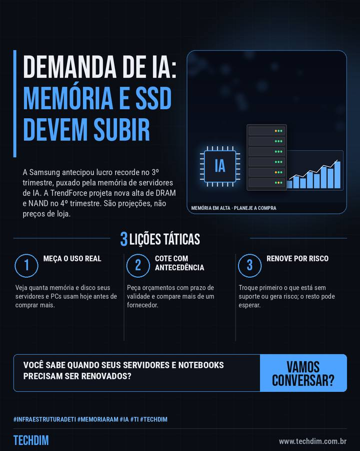

Notícia de tecnologia
Memória e SSD podem encarecer: Samsung projeta lucro recorde com a demanda de IA
A Samsung antecipou lucro recorde no 3º trimestre, puxado pela memória de servidores de IA. A TrendForce projeta nova alta de DRAM e NAND no 4º trimestre. São projeções, não preços de loja.

Em resumo
- A Samsung estimou lucro operacional de 107,4 trilhões de wons no 3º trimestre, alta de 782% em um ano, puxado pela memória usada em servidores e IA
- A TrendForce projeta, para o 4º trimestre, alta de 10% a 15% nos preços de contrato da DRAM convencional e de 15% a 20% nos da memória NAND (SSD)
- São projeções, não preços de loja: o efeito em servidores e notebooks varia por fornecedor. Cote cedo e dimensione memória e SSD pelo uso real
Vai renovar servidores ou notebooks? Meça o uso real de memória e SSD antes de comprar.
Por que importa
A demanda de IA aperta a oferta de memória e SSD; quem renova equipamentos neste fim de ano precisa planejar o orçamento.
O que fazer na prática
- Meça o uso real. Veja quanta memória e disco seus servidores e PCs usam hoje antes de comprar mais.
- Cote com antecedência. Peça orçamentos com prazo de validade e compare mais de um fornecedor.
- Renove por risco. Troque primeiro o que está sem suporte ou gera risco; o resto pode esperar.
Fontes consultadas
Mais do Radar de hoje
Leia também
Este texto resume as fontes citadas na data de publicação. Confira sempre o aviso oficial do fabricante antes de agir em produção.